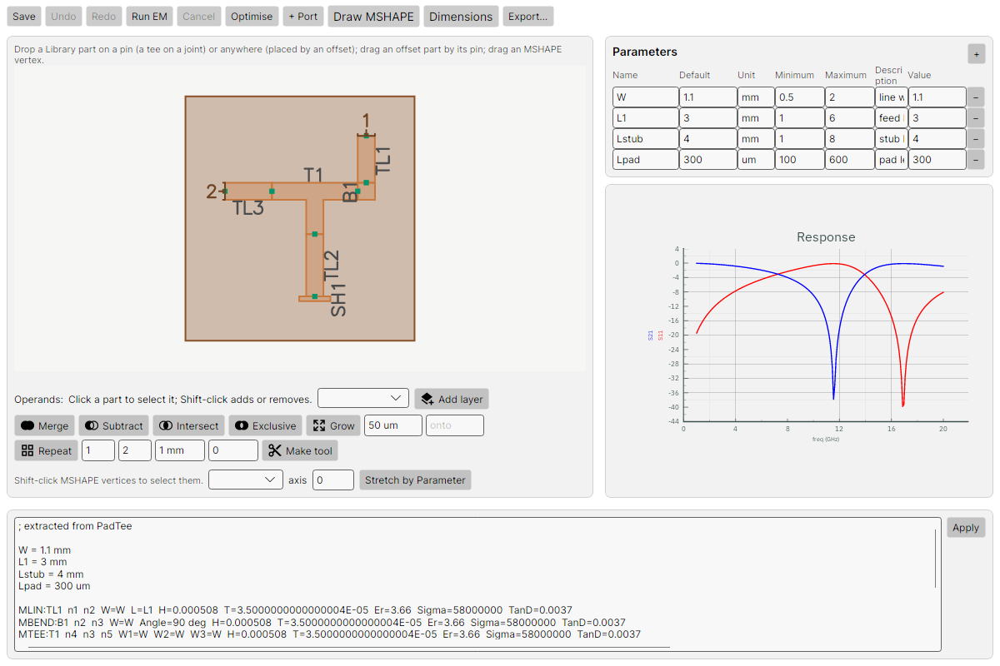
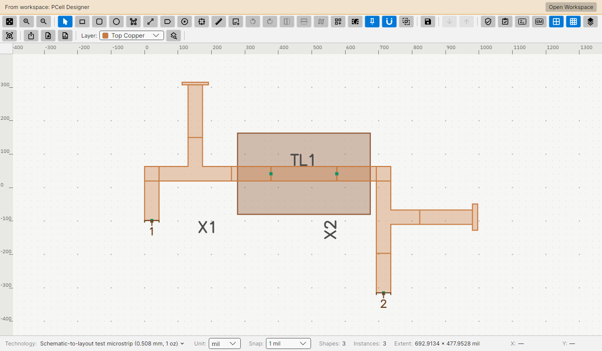

PCell Designer
A parameterised cell made from circuitRF's own primitives - its layout a function of its parameters at every value, its schematic its circuit model - exported as a PCell package that any workspace places like a kit's cell.
What it is
The PCell Designer makes a designed cell: a PCell built from the parts in the Library (lines, bends, tees, coupled lines, vias, footprints, kit and Python PCells) and from drawn copper (MSHAPE). Three rules make it a PCell rather than a drawing:
- Its layout is a function of its parameters. Parts joined by a net are placed pin to pin, as Update Layout from Schematic places them. A part that no net joins is placed by an offset from another part's pin. A drawn shape's corners and pins are expressions. There is no coordinate typed by hand anywhere, so the layout is right at every value of every parameter.
- Its schematic is its circuit model. The cell simulates as any hierarchical cell does, from its own schematic. No second model is fitted or stored.
- It places like any PCell. Once designed, the cell is a Library part with its parameters in the Properties, drag
handles in the layout, regeneration when a value changes, an identity in LVS and copper in EM. It goes to
another workspace as one file, a PCell package (
.cpcell).

Lpad.Opening it
- Tools ▸ PCell Designer… opens the designer on the active schematic's cell when that cell is designed. Otherwise it
makes a new designed cell in the workspace,
PCell1(PCell2, … when taken), and opens it. Rename it in the project tree. - Edit in PCell Designer on the right-click menu of a placed designed cell, in a schematic or a layout, opens the cell it places.
- File ▸ Import ▸ PCell Package… imports a
.cpcellinto the workspace (see below).
One window is open per cell. Asking for a cell that is already open brings its window forward.
A designed cell is an ordinary cell folder with a schematic, a symbol and a .ccell. What marks it as designed is a
PCellDesign entry in its .ccell, which also names its layout generator cpcell:<cell name> and sets EmCopper (see
File formats).
The window
| Part | What it does |
|---|---|
| Canvas | The cell's layout at the values in the Value column, drawn as circuitrf render draws a layout. It is redrawn after every change. You cannot draw on it: you change the schematic, and the canvas shows what the schematic places. |
| Parameters | One row per cell parameter: name, default with its unit, Minimum, Maximum and description. + adds a row and − removes one. A parameter is a number: a length, an angle or a count. |
| Value | The value the canvas and the response are drawn at, typed as a default is (400 um, or 400 in the parameter's unit). It is not saved. Use it to see the cell at the ends of its range. |
| Response | The cell's S-parameters by its circuit model, recomputed a quarter of a second after you stop typing. The sweep is the schematic's first S-parameter analysis, else 1 to 20 GHz. |
| Text | The cell's netlist (.cnl), kept up to date. Edit it and press Apply: the text is merged into the schematic by designator. A changed value changes the part, a new designator adds a part, and a removed one removes it. A part whose type changes is refused: give it a new designator instead. When the nets are unchanged the wires stay as drawn; otherwise they are redrawn, and every part you kept keeps its place. |
| Save | Writes the schematic, the .ccell and the cell's own layout. The saved layout is always the one at the parameters' defaults, never at the Value column. |
| Undo, Redo | Every gesture and every Apply is one step. |
Gestures on the canvas, each one undo step:
- Drop a Library part on a pin. The part is added to the schematic with its pin on that pin's net. A pin already joined to another part's pin is refused, because a tee is a part you place, not one the designer invents. A pin on ground puts the new pin on ground.
- Drag an offset part by its pin to move its offset (see below).
- Drag a corner of an MSHAPE, or select corners and use Stretch by Parameter (see below).
Where each part goes
Parts joined by a net are placed pin to pin, starting from the first chain in the schematic. Report lines under the canvas say where each part went and name the root, the part the layout starts from.
A part that no net joins needs to be told where it goes: a pad beside a line, a second line across a gap. It carries an
offset placement, kept with the part in the schematic file (the component's Offset, see
File formats). The netlist text does not carry it, because it is placement and not circuit:
| Field | Meaning |
|---|---|
| Anchor | The pin it is placed from, as <part>.<pin>: TL1.2 |
| Pin | Which of this part's pins goes to the offset point |
| Dx | Along the anchor pin's outward direction |
| Dy | 90° counter-clockwise from it |
| Unit | The unit of Dx and Dy |
| Angle | The turn, in degrees. 0 means this pin faces the anchor pin, as at a joint |
Dx, Dy and Angle are expressions, so Dx = g makes a gap that follows the parameter g. All three zero is exactly a
joint. Everything joined to the offset part moves with it. When you drag an offset part on the canvas, the change is
added to Dx and Dy as a number: g becomes g + 30, and the parameter stays in the expression.
An anchor that does not resolve, an expression that does not evaluate, or two offsets that pull one chain in different directions is reported, and that offset is not applied. Nothing is moved to hide it.
Drawn metal and Stretch by Parameter
MSHAPE is copper you draw: a closed outline (Form = "polygon") or a centreline of width W
(Form = "path"). Its corners are the rows X[i], Y[i] and its pins the rows PinX[k], PinY[k], PinW[k],
PinDir[k], all in the part's own frame. Each row is an expression like any other value, so a corner can be Lpad or
W/2.
Model says what a circuit simulation does with it:
Model = "open": its pins are left open. A pad at a line's end simulates as an open end.Model = "none": it has no circuit model. A cell that holds one can only be simulated by EM: a run by circuit models is refused naming the shape, and an optimisation usesem=direct.
Write the two words quoted, as Form="polygon" and Model="open" in the netlist text.
Stretch by Parameter ties corners to a parameter. Shift-click the corners that should move, type the parameter and the direction (degrees, in the shape's own frame), and press Stretch by Parameter. The shape stays as it is at the current values, and each selected corner moves by δ along that direction when the parameter grows by δ. The binding is kept with the part, so a placed copy of the cell shows a drag handle for that parameter. Pins do not move with a stretch.
Run EM and Optimise
Run EM saves the cell, makes an EM setup for its layout when it has none (a Planar setup, the schematic's Ports as its ports), and solves the layout at the current values. The EM response is drawn over the circuit response. Cancel stops it.
Optimise saves the cell and opens its schematic with the Optimizer. Goals, variables, em=correct
and em=direct work there as for any cell simulated by EM.
The design check
Export… runs the design check first, and circuitrf pcell check runs it on its own. It reports, among others:
| Id | What it says |
|---|---|
pcell.unjoined, pcell.placement |
A part that is neither joined nor offset-placed, or an offset that cannot be made, at the defaults, at a parameter's Minimum or at its Maximum |
pcell.choices |
A parameter that offers choices. A designed cell's parameters are numbers |
pcell.parameter-is-var |
A parameter that is also a VAR of the schematic |
pcell.range |
A Minimum above its Maximum |
pcell.no-ports, pcell.port-num |
No Port, or Ports not numbered 1, 2, … |
pcell.mshape-pins, pcell.mshape-model |
A drawn shape with no pin, or a Model other than none and open |
pcell.no-circuit-model |
A drawn shape with Model = "none": the cell is EM only |
An error stops the export. The check plans the cell at each parameter's ends because a layout that holds together at the default can still break at a limit: a stub shorter than its tee, or two parts that overlap.
Export and import: the PCell package
Export… writes <cell>.cpcell: the cell folder (its .ccell, its schematic and its symbol) and a small manifest. It
holds no layout, no EM setup and no results, because the generator draws the layout wherever the cell is placed. The same
cell exported twice gives the same bytes.
File ▸ Import ▸ PCell Package… unpacks it into the workspace as an ordinary cell. Importing the same package again is reported as already imported. A different package with the same cell name is refused, and nothing is overwritten. A package that names a layer the workspace's technology does not have is refused with the layers it misses.
A designed cell placed in a schematic
Place the cell from the Library like any other cell, and set its parameters on the instance. Then:
- Update Layout from Schematic draws each placement at its own values. Two placements with different values get different copper.
- In the layout, each Stretch by Parameter binding is a drag handle on the placed cell, inside the parameter's range.
- Update Schematic from Layout links a designed cell placed in the layout to a schematic instance, as it links a kit part.
- LVS knows the placed cell by its generator,
cpcell:<cell name>, and pairs its pins with the schematic instance's pins by port number. - EM solves the placed cell's layout as copper (
EmCopper), so a bench placing it can be simulated by EM of its own layout and optimised. Tune a placement's value through a VAR of the bench: setLpadonX1toLp1and tuneLp1, as for any value of a schematic simulated by EM of its own layout.
A drawn shape with Model = "open" is an open end to the circuit model, so its size has no effect there. em=correct
corrects the circuit model by EM but searches on the circuit model, so it cannot move a variable that only changes such a
shape: it stops at the start, saying the next point is the geometry it has already solved. Optimise such a variable with
em=direct, which searches on EM itself.

X1 with
Lpad = 200 um and X2 with Lpad = 400 um, each its own copper.Running it headless
circuitrf pcell is the designer with no window. Each noun calls the function the window's command calls, so both write
the same files (see the command line):
$ circuitrf pcell new . PadTee
$ circuitrf pcell check PadTee
$ circuitrf pcell render PadTee -o padtee.svg --set Lpad=400um
$ circuitrf pcell export PadTee -o PadTee.cpcell
$ circuitrf pcell import PadTee.cpcell --into ../other-workspaceOver MCP it is the pcell tool, with what=new|check|render|export|import.